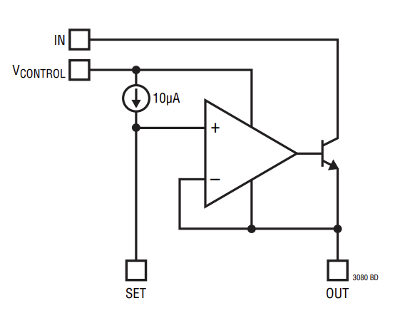
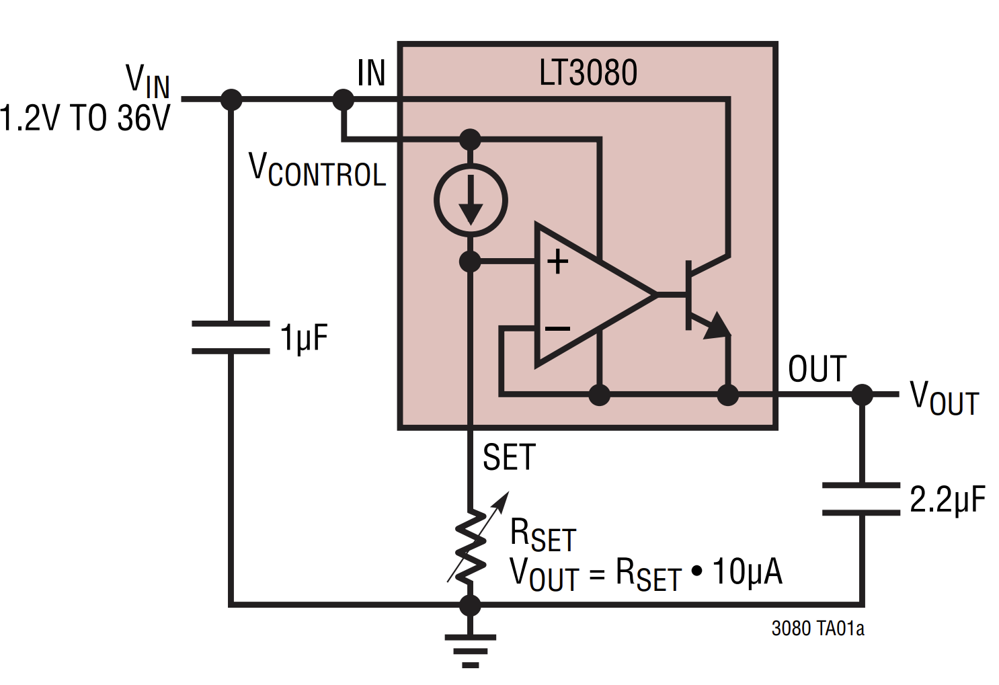
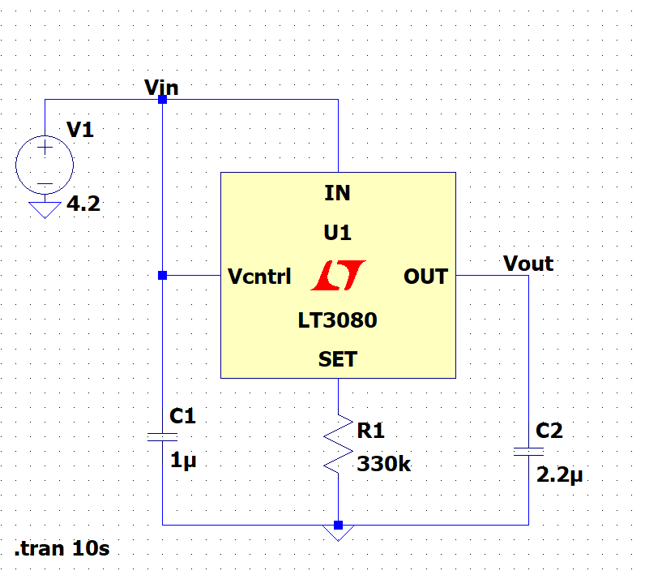

LDO(LT3080)
Goal of Application: Drop from 4.2 V to a consistent 3.3 V. Also known as a DC-to-DC step-down converter.
Specific Part: LT3080EDD#TRPBF
https://www.digikey.com/short/hdhdfn83
Notes: DD Package, 8-Lead DFN (3mm x 3mm)
Cost: $6.40

Typical Application

3.3V Application
$$V_{out} = R_{set} \cdot (10 \times 10^{-6})$$
$$R_{set} = V_{out} \cdot 10 \times 10^{6}$$
$$R_{set} = (3.3) \cdot 10^5 = 330 \text{ k} \Omega$$

Application of LDO in LTSpice.
What is an LDO?
- A Low Dropout Regulator(LDO) is a voltage regulator that can get a regulated low output voltage from a higher input voltage.
- The output is steady, low noise, DC.
- This is compared to a Linear Voltage Regulator, which requires a higher voltage drop to function as designed.
LDO Parameters
Quiescent Current (IQ) - Current drawn by system when light or no load is connected
Power Supply Rejection Ratio (PSRR) - Ability to reject AC elements of source(e.g. ripple voltage). The datasheet of the LT3080 simply calls it "Ripple Rejection".
Defined by: \(20\log(\frac{V_{ripple, in}}{V_{ripple,out}})\)
Ex: Let \(V_{ripple, in}=2 \text V\) & \(V_{ripple, out}=0.2 \text V\)
$$\text{PSRR} \vert_{dB} = 20\log \left(\frac{V_{ripple, in}}{V_{ripple,out}} \right) = 20 \log \left(\frac{2}{0.2} \right) = 20 \text{ dB}$$
Ex: Let \(V_{ripple, in}=2 \text V\) & \(V_{ripple, out}= 2 \text {mV}\)
$$\text{PSRR} \vert_{dB} = 20\log \left(\frac{V_{ripple, in}}{V_{ripple,out}} \right) = 20 \log \left(\frac{2}{2\times10^{-3}} \right) = 60 \text{ dB}$$
Note: For the PSRR relating to our current application of the part, refer to the "Ripple Rejection, Single Supply" graph. If the \(V_{IN}\) and \(V_{CONTROL}\) pins are powered by different sources, then refer to the "Ripple Rejection, Dual Supply" graphs.
Load Regulation - Ability to maintain specified output voltage under varying load conditions
\(\text{Load Regulation} = \frac{\Delta V_{out}}{\Delta I_{out}}\)
Applications Information
-
For minimizing board leakage: recommends encircling the SET pin and circuitry with a guard ring operated at a potential close to itself, tied to the OUT pin.
-
\(V_{IN}\) must be more than 0.1V to 0.5V greater than the output voltage. This depends on the current that needs to flow through the load. For more information, refer to pages 4 and 8 of the datasheet.
-
There must be a minimum load current of 1 mA
OUTPUT CAPACITOR 2.2u
- Capacitor must have an ESR(Equivalent Series Resistance) of 0.5 Ohms or less
- How to find the ESR of a capacitor is explained here
- Materials with a low ESR include: Ceramic, Tantalum, or low ESR electrolytic
A Note on Ceramic Capacitors
- Ceramic capacitors are manufactured with a variety of dielectrics, each with different behavior across temperature and applied voltage
- Most common dielectrics are specified with EIA temperature characteristic codes of: Z5U, Y5V, X5R, X7R
- Z5U, Y5V dielectrics are good for providing high capacitances in a small package, but tend to have strong voltage and temp coefficients
- X7R or X5R are better to use, but be aware of their temperature characteristics
- Try not to find a ceramic capacitor with a piezoelectric response. (It's no requirement, but MIL-STD-202 testing is vibration testing.)
Additional Purchased Components
330K Resistor
ERA-3AEB334V
https://www.digikey.com/short/nzfdzw40
Notes: 0.1% Tolerance, 0.1 W Power Rating(This is fine)
Cost: $0.35
1u Capacitor
C0603C105K8PAC7867
https://www.digikey.com/short/z8pd0t38
Notes: Tolerance: 10%, Temperature Coefficient: X5R, Rated Voltage: 10V, Package: 0603, ESR: 0.008 Ohms < 0.5 (Source: LTSpice). Normally stocking, RoHS compliant, has datasheet. Has gone through MIL–STD–202 testing. Optionally, you could buy another as a bypass capacitor of the 330k resistor. The LDO’s datasheet claims that would lead to “improvement in transient performance” and reduction of system noise.
Cost: $0.10
2.2u Capacitor
C0603C225K8PAC7867
https://www.digikey.com/short/4v45dvz4
*Notes: Tolerance: 10%, Temperature Coefficient: X5R, Rated Voltage: 10V, Package: 0603, ESR: 0.017 Ohms < 0.5 (Source: LTSpice). Normally stocking, RoHS compliant, has datasheet. Has gone through MIL–STD–202 testing.
Cost: $0.23